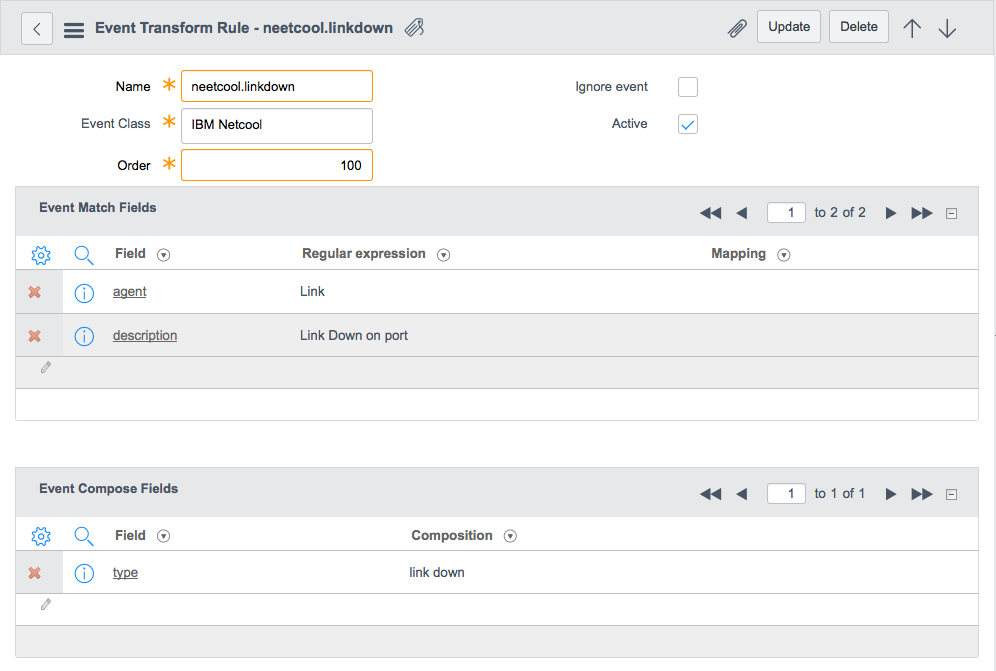
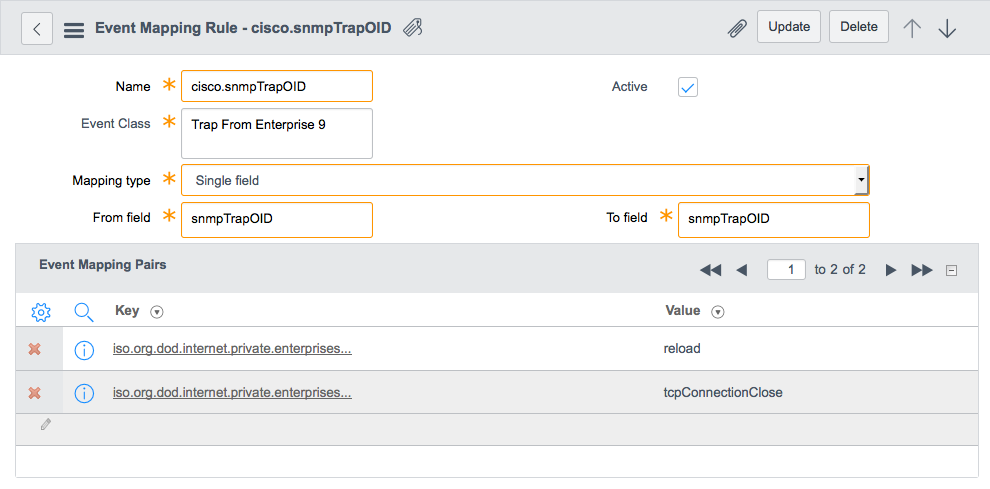

Event Management
| |
Note: This article applies to Fuji and earlier releases. For more current information, see Event Management at http://docs.servicenow.com
The ServiceNow Wiki is no longer being updated. Visit http://docs.servicenow.com for the latest product documentation. |
1 Overview
Event management allows IT operation administrators to combine multiple event sources from monitoring tools such as Icinga and Nagios into a single management console. Event management provides options for configuring and managing events, and for integrating with other ServiceNow features such as incident, change, and task management, and CMDB and services management.
Event management is available starting with the Eureka release.
2 Video Tutorial
This video demonstrates how the Event Management application provides a consolidated view of various monitoring tools in your system, and how you can configure the application to work with other ServiceNow features, such as incident and change management.
| Event Management Demo |
|---|
3 Events
An event is a notification from one or more monitoring tools that indicates something of interest has occurred, such as a log message, warning, or error. The system receives or pulls events from one or more external event sources and stores them in the Event [em_event] table.
3.1 Identifying Information
Each event is uniquely identified by the following characteristics:
| Identifying Field | Description | Populated by |
|---|---|---|
| Source | The external event monitoring tool that generated the event. | External event monitoring tool |
| Type | The category the event source uses to identify the event. | External event monitoring tool |
| Node | The physical or virtual device on which the event occurred. | External event monitoring tool |
| Resource | The component on the node to which the event applies. | External event monitoring tool |
| Event Class | The category transform and mapping rules used to identify the event. | External event monitoring tool |
| Message Key | The event's unique key generated by combining the source, type, node, and resource values. | External event monitoring tool |
The event monitoring tool generates the values of the source and resource fields. Event management implementers can define event types and register nodes to help uniquely identify incoming events and create alerts for the specific needs of the enterprise. Event Management uses this information to determine whether to create a new alert or update an existing one.
An event source may generate duplicate events, with the same identifying information. For events with the same identifying information, event management uses the time interval between events to determine if events represent an existing issue or new issue.
3.2 External Event Sources
Event Management can import events from external sources. The system offers native support for the following event sources:
- Netcool/OMNIbus ObjectServers and Impact Servers
- Microsoft System Center Operations Manager (SCOM) servers
- Solarwinds Log & Event Manager servers
Users with the evt_mgmt_admin role can import events from these sources with a connector definition. See Importing Events from Supported External Sources.
Native support for external event sources is available starting with the Fuji release.
Customers on earlier versions or who need to import events from other event sources, must create a scripted integration. Users with the evt_mgmt_integration role can use the system REST APIs and a Python script to insert raw events into the Event [em_event] table. See Integrating External Events with Event Management.
3.2.1 SNMP Traps
Event management can process SNMP traps as events. In this configuration, a MID Server acts as a collection endpoint for SNMP traps. Event management can then periodically pull events from the MID Server. See SNMP Trap Collector Extension for more information.
Creating events from SNMP traps is available with the Fuji release.
3.3 Event Transform Rules
The system uses event transform rules to transform and normalize event data before processing it for alerts. Event transform rules do not change records in the Event [em_event] table. Instead event data changes are only ever stored in system memory and used for processing. Administrators can use event transform rules to:
- Identify which events to transform based on a set of matching conditions.
- Identify which events should be ignored.
- Specify what event field values to add or update.
An event transform rule only updates or inserts event values when all the following conditions apply:
- The event transform rule's Event Class field matches the event's class value.
- All the regular expressions in the Event Match Fields embedded list match to either event fields or name-value pairs in the Additional Information field.
| Click the plus to view an example event transform rule |
|---|
|
 Sample event transform rule For example, this event transform rule only runs when the Event Class is IBM Netcool, the Description field has a value Link Down on port, and the Additional Information field contains an agent element with the value of Link. When this event matching rule runs it sets the Type field to the value of link down. |
{kind=link}
The system processes event transform rules before processing event mapping rules and event filters.
To create an event transform rule, see Configuring Event Management.
Event transform rules are available starting with the Fuji release.
3.4 Event Mapping Rules
The system uses event mapping rules to transform and normalize event data before processing it for alerts. Event mapping rules do not change records in the Event [em_event] table. Instead event data changes are only ever stored in system memory and used for processing. Administrators can use event mapping rules to:
- Copy values from one event field to another event field.
- Define a mapping from one field value to another field value.
An event mapping rule only copies an event field values when all the following conditions apply:
- The event mapping rule's Event Class field matches the event's class value.
- The From field contains a matching value in the Event Mapping Pairs embedded list.
| Click the plus to view an example event mapping rule |
|---|
|
 Sample event mapping rule For example, this event mapping rule only runs when the Event Class is Trap From Enterprise 9 and the Additional Information field contains an snmpTrapOID element with a value of either iso.org.dod.internet.private.enterprises.cisco.0.0 or iso.org.dod.internet.private.enterprises.cisco.0.1. When this event mapping rule runs it sets the snmpTrapOID element to the value of either reload or tcpConnectionClose. |
{kind=link}
The system processes event mapping rules after processing event transform rules and before event filters.
To create an event mapping rule, see Configuring Event Management.
Event mapping rules are available starting with the Fuji release.
3.5 Event Filters
Event filters are a set of conditions that allow you to exclude events that you do not want converted into alerts. Event Management does not create alerts for filtered events. Filtered events remain in the Event table until they are deleted during table rotation.
To create event filters, see Configuring Event Management.
The system processes event filters after processing event transform rules and event mapping rules.
4 Alerts
An alert is a notification generated by event management for selected events that are considered to be important and require attention. Multiple related events may correlate into a single alert. Event Management only creates alerts when one or more events meets the conditions defined by one of the following records:
To manage the alert life cycle, see Managing Alerts.
4.1 Active Interval
The active interval determines if an event that has same identifying information as a previous event is a recurrence of an existing issue, or a new issue. Event management compares the Time of event field with the associated alert's initial event time. If the new event occurs before the alert's initial event time, it is ignored. If the new event occurs within the active interval, it is identified as a recurrence of the existing issue and the severity is copied to the alert. If the matching existing alert has been closed, it is reopened. If the new event occurs after the active interval lapses, it is identified as a new issue and a new alert is created.
4.2 Flapping
Alert state flapping occurs when the event source continues to generate events even after its associated alert has been closed. Flapping causes the status of the resource to repeatedly fluctuate between a clear and non-clear severity.
For example, if an operator responds to an alert generated by a problematic server and reboots it in an attempt to fix it, no events may be generated for several minutes and the operator may close the alert. However, if the reboot did not fix the issue, this server will continue to generate events for the same issue. When the event is received by event management, there are two possibilities:
- The same issue is recurring, in which case the event should be associated with the existing alert.
- It is a new issue, in which case a new alert should be created.
The frequency of these events from an identical source within a given time interval determines whether the alert is in a flapping state or a new issue has occurred.
An alert enters the flapping state if its flap count—the number of times it has fluctuated between states—is equal to or greater than the flap frequency within the time period of the flap interval. Both the flap frequency and flap interval are system properties.
For an alert to exit the flapping state, the time interval between the latest occurrence of the event and the previous occurrence, the Flap last update time field of the Alert form, must be greater than the flap quiet interval property. An alert can exit flapping as follows:
- When the incoming event occurs after the flap quiet interval has passed. The new alert state depends on the incoming event severity.
- By a background job, which runs every 5 minutes. It checks if there are no updates to the alert after the flap quiet interval time has passed. If there are no updates, the alert state is set to the state the alert was in before the background job ran.
See Configuring Event Management for setting flapping properties.
4.3 Acknowledgement
Some alerts require an operator to manually acknowledge an issue. This ensures that the operators is aware of issues that need attention. The system can also automatically acknowledge alerts, typically when creating an incident from an alert.
4.4 Alert Rules
An alert rule determines how an event becomes an alert. Alert rules allow administrators to:
- Automatically modify event field values before creating or updating an alert. See Overwrite Alert Template.
- Automatically generate incidents. See Incident Templates.
To create alert rules, see Configuring Event Management.
4.4.1 Overwrite Alert Template
An overwrite alert template modifies alert field values before inserting or updating it into the Alert table. Overwrite alert templates can be used, for example, to reduce the severity of alerts open against test configuration items or test sources. The condition determines which alerts the system changes prior to insert or update. The alert template determines what alert fields and values the system changes when the alert rule conditions are met.
4.4.2 Incident Templates
An incident template automatically creates an incident when an alert matches the rule's criteria. For example, you might want to create an incident whenever an alert's Severity is Critical. The incident template might set the assignment group, category, priority, and description for a critical incident. Users can also manually create incidents from the Alert form using the Create Incident button. To prevent the creation of duplicate incidents, the system checks the conditions of all incident templates before creating an incident.
4.5 Threshold Rules
Threshold rules allow event administrators to create custom alerts when a particular threshold is met or exceeded. Threshold rules define what event conditions must be met to create a threshold alert. Event management processes alert threshold rules before regular alert rules. This means that events that trigger a threshold rule cannot then trigger a regular alert rule. For example, administrators might create a threshold rule to generate an alert when CPU utilization exceeds 90% twice in 90 seconds.
To create threshold rules, see Configuring Event Management.
Threshold rules are available starting with the Fuji release.
4.5.1 Changes to Alert Records
The following alert fields support threshold rules:
- Category: indicates whether the alert was generated by a threshold rule or a regular alert rule.
- Work notes: indicates the alert rule or threshold rule used to generate the alert.
- Additional Information: indicates the event metric and metric value associated with the alert. Threshold alerts require a JSON string containing the event metric and metric value.
5 Event Management Process Flow
{kind=link}
The Event [em_event] table collects inbound events from the external event sources. Administrators configure event management to specify which events the system converts into alerts as well as the contents of alerts. Event management processes events in batches to:
| Event Management process | Purpose |
|---|---|
| Perform Configuration Management Database (CMDB) lookups | Associate events and alerts to CIs. |
| Apply event transform rules (available starting with the Fuji release) |
|
| Apply event mapping rules (available starting with the Fuji release) |
|
| Apply event filters |
|
| Apply alert threshold rules | Create alerts when threshold conditions occur. |
| Apply alert rules |
|
| Check alert active interval | Determine whether to update an existing alert or create a new one. |
| Detect flapping | Determine whether a resource is continuously changing state. |
For events that meet the defined criteria, Event Management creates alerts in the Alert [em_alert] table. If an alert does not already exist for the event, a new alert is created. If the alert already exists, the existing alert is updated appropriately. The alert life cycle consists of:
- Acknowledging alerts.
- Creating incidents for alerts that match incident rules.
- Closing alerts for resolved issues.
6 Roles
| Role Title | Role Name | Description |
|---|---|---|
| Event Management Integrator | evt_mgmt_integration | Has create access to the Event Management Event [em_event] and Event Management Registered Nodes [em_registered_nodes] tables in order to integrate with external event sources. |
| Event Management User | evt_mgmt_user | Has read access to all event management features. Have write access to alerts in order to manage the alert life cycle. Have the itil role so they can manage incidents that are created from alerts. |
| Event Management Administrator | evt_mgmt_admin | Has read and write access to all event management features in order to configure event management. |
7 Menus and Modules
The Event Management application consists of the following modules.
| |
| |
| |
| |
|
{kind=link}
8 Activating Event Management
Event management is available as a separate subscription.
To purchase a subscription, contact your ServiceNow account manager. The account manager will arrange to have the plugin activated on your organization's production instance, generally within a few days.
| |
Note: If you do not have an account manager or decide to delay activation after purchase, use the steps below when you are ready to activate. |
You can evaluate the feature on a sub-production instance without charge by requesting it from the HI Customer Service System.
| Click the plus to expand instructions for requesting a plugin. |
|---|
|
Because event and alert records are sensitive to the creation time, the demo data can become out-of-date. To rewrite the event demo data with updated creation times, navigate to System Definition > Plugins, click Event Management in the Name column, and then click the Rewrite Demo Data Creation Time related link.
9 Enhancements
9.1 Fuji
- Improves throughput by 100 to 200 percent through parallel event processing.
- Enables the ServiceWatch Connector library to deliver integrations (NetCool, SolarWinds, SCOM, Splunk, HP Operations Manager) to the Event Management REST API.
- Leverages the ServiceWatch SNMP collector to enable MID Servers to collect and forward SNMP traps to the Event Management REST API.
- Allows the transformation and normalization of events with event transform rules and event mapping rules.
- Allows event administrators to create alerts for when a threshold is exceeded.
- Supports event monitoring of Amazon Web Services. You can configure AWS and Event Management event rules to send alarms to Event Management. Integrating AWS CloudWatch to receive alarms as events